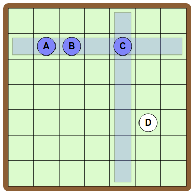
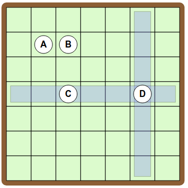
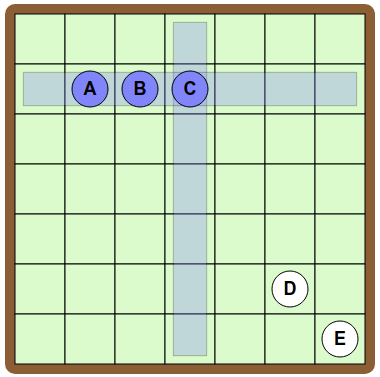

Lösning
För att få en linje mellan A och B kan vi placera cirklarna på samma rad.

För att få en linje mellan B och C måste vi placera C på samma rad eller i samma kolumn som B.
Men om vi lägger C på samma rad som B får vi också en linje mellan A och C som vi inte vill ha.

Vi måste alltså i stället lägga C i samma kolumn som B, t.ex. så här:

Återstår att placera ut D. Eftersom vi vill ha en linje från D till C, men inte till B eller A, måste vi placera D på samma rad som C, men inte i samma kolumn som A. Här är en lösning:

Det finns många andra lösningar, t.ex. denna där kopplingarna görs tvärtom (rad bytt mot kolumn):

För att koppla ihop A, B och C inbördes alla tre, vilket motsvarar en triangel i diagrammet, kan vi placera cirklarna på samma rad.

För att sedan förbinda D med B, utan linjer till A eller C, måste vi placera D i samma kolumn som B.

Till sist, för att få linjer från E till C och från E till D, måste vi placera E i samma kolumn som C och på samma rad som D.

En effektiv metod utnyttjar de trianglar som finns i målbilden. I diagrammet bildas en triangel när de tre cirklarna befinner sig på samma rad eller i samma kolumn.
För att koppla ihop A, D och G kan vi placera cirklarna på samma rad. Därefter, för att få triangeln D C F kan C och F läggas i samma kolumn som D.

För att koppla ihop H, E och C placerar vi H och E på samma rad som C, men undviker någon av de tidigare använda kolumnerna.

För att fullborda digrammet ska vi koppla B till E och B till F, vilket går bra om vi lägger B i samma kolumn som E och på samma rad som F.

Det är datavetenskap!